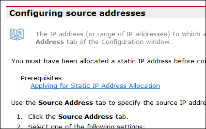

The pre-requisites (prereq) element describes the
status or situation that must be established before a procedural task can be
started. It can contain cross-references to pre-requisite task topics.
The optional pre-requisites (prereq) element in task
topics is used to describe the things that a user needs to know or do before
starting the task.
During output to a reading format, the pre-requisite
(prereq) element should be labelled so that the reader can
identify the information as being a pre-requisite state.
The
prereq element must read as one or more complete
sentences.
Normally you should only need to have one block of
pre-requisite information, and you should not nest a single, redundant
paragraph (p) element within the
prereq element. However, if you need to include more than
one block, you will need to nest paragraphs inside the
prereq element.
For example, a typical single-block pre-requisite should be structured
as:
<prereq>Ensure...</prereq>
while a lengthy pre-requisite with more than one block should be
structured as:
If there are any topics that document pre-requisite tasks, these should
be added as links in the
related-links section at the bottom of the topic, with the
link element's
importance attribute set to
required. This will result in those links being placed
under the pre-requisites block during processing to a reading format.
The following example shows a typical presentation of a required link
from the
related-links section in a task topic processed to XHTML.
Typical XHTML output of
related-links with
importance setting of
required

Rationale
According to the DITA Language Specification:
The pre-requisite (prereq) section of a task should
document things the user needs to know or do before starting the current task.
Prerequisite links will be placed in a list after the related-links section; on
output the
prereq links from the
related-links section are added to the
prereq section.
But how should such pre-requisites be phrased?
Here is an example of four options of phrasing the same pre-requisite
information.
You must have
Administrator rights to install this program.
You have Administrator
rights to install this program.
Obtain Administrator
rights to the program.
Administrator rights
The second and fourth options don't seem to make sense on first
reading, but in context, it may be under a heading of
Pre-requisites.
The third option uses the imperative; imperative sentences tend to
translate to other languages better than other constructions.
Interestingly, the presentation of the content will have some impact
on the preferred syntax. For example, if there is not going to be a
"Pre-requisites" heading, the second option cannot be used, and the third
option may be better moved to the first step of the procedure. However, with
the heading, all four are valid choices.